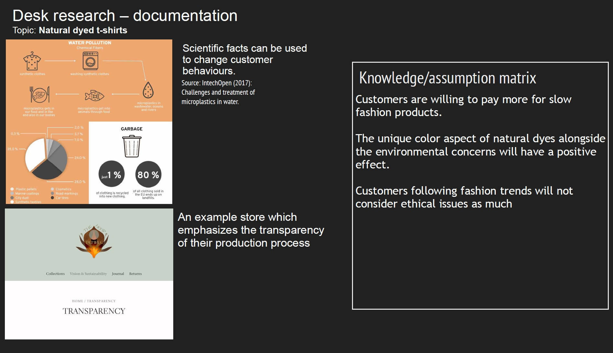
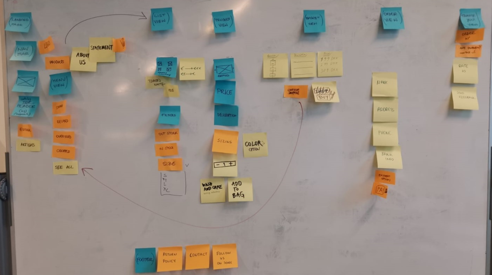

The purpose of this module was to learn a selection of UX design and
research methods, as well as testing, presenting and communicating the
results. The main project was to be conducted in a group to create a
concept for an online shop selling T-shirts.
Data Collection
Description
03.01.01 Individual assignment
The first part of the Basic UX theme we were taught about the
methods of desk research, observation, interview and surveys.
Process & Knowledge
Desk Research: The choice of topic for this theme was
ethical online stores that are transparent about the proccess in
which their products are made with a focus on natural dyes.
Observation: AEIOU model for sorting data while observing a
selection of friends conducting online shopping.
Interview: I interviewed friends face to face a number of
prepared questions along with some more in the moment questions
while recording audio and taking notes.
Survey: Which was conducted amongst the entire class from
which a summary of the key findings were extrapolated for my
chosen subject.
Solution

Early Prototypes
Description
03.02.01 Group assignment: (DH Group) RAW - Get wise, Plant
wise
The second part of the assignment, where groups were formed and
preperations were made to decide which idea fits best to move
forward with.
Process & Knowledge
Our first step as a group was to make use of guard rails and
sharing and voting methods to narrow down our suggestions which
initially derived from our individual preparations with Crazy 8s
and Solution Sketches.
We have decided on what our product will be and what makes our
product’s “unique selling point”. Card sorting method was the most
crucial step to our final decision of what to include in our
webstore as in content and navigation. This step led us to create
Adobe XD Prototype Click here!our paper prototype. We made 3 paper
prototype tests and the results showed key findings about the
placement of our navigation bar, order view page issues and e-mail
confirmation section in the order form. In the light of these key
findings, we started preparing the XD prototype to make ready for
the Think Aloud test. When our XD prototype was ready, we were
happy with the general results regarding the usability and flow.
And we are ready to take the next step in our design.
Solution

Solution
Description
Group assignment: 03.03.01 - 03.03.02
Final version of the XD prototype and documentation.
Process & Knowledge
We created our website's content and design after targeting our
clients. According to our client profile who is well-educated and
critical, we decided to have a section thatdeclares the company's
statement.
Card sorting method was the most crucial step to our final
decision of what to include in our webstore as in content and
navigation. This step led us to createour paper prototype. We made
3 paper prototype tests and the results showed key findings about
the placement of our navigation bar, order view page issues and
e-mail confirmation section in the order form.
Our paper prototype test showed that our product view page was
lacking unity. The testers showed us that there wasn't enough
clear distinctions between selection elements such as size, color
and amount and the visuals.
Think aloud test showed us that our drop-down menu was not big
enough to be differentiated from the navigation bar.